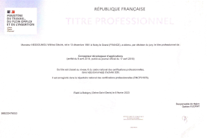
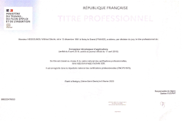

Example pure html-css-js web site
Présentation
Bonjour, je m'applelle Wilfried et je suis candidat pour un poste de
concepteur et développeur (bureautique, mobile, web).
Diplômé d'une
cerification de niveau VI (bac+3/4) en tant que
concepteur et développeur d'applications je suis
initié aux langages de programmation tels que
HTML , CSS ,
JavaScript , C/C++ ,
C# , Java .
Je suis passionné par les nouvelles technologies et la création
d'applications en tout genre, site web fullstack interactifs,
dynamiques et responsive qui répondent aux besoins des utiliisateurs
et clients.
Je maîtrise les outils de conceptions graphique comme
figma , photoshop ,
illustrator
ainsi que les frameworks comme
Bootstrap , JQuery ,
VueJs , Springboot ,
.NET .
Je suis également familier avec les méthodes agiles de gestion de
projet, comme le
Scrum et Kanban.
Motivé, rigoureux et capable de travailler en équipe ou en
autonomie, je pense avoir les compétences et les qualités requises
pour rejoindre vore entrprise et participer à vos projets.
Mon CV

Diplômes et Certifications
retour haut de page 



Mon expérience en bref
Diplômé de l'enseignement général d'un BEP electrotechnique et après
avoir œuvré pendant 8 années au sein d’un fournisseur d’accès
internet et téléphonie
en tant que technicien télécoms et réseaux, j’ai décidé de
m’investir dans le monde du développement.
Déjà familiarisé avec cet univers en autodidacte pendant plusieurs
années, j’ai voulu approfondir mes connaissances par le biais d’un
réel enseignement.
J’ai donc suivi une première formation diplômante reconue par l'état
en tant que développeur et intégrateur web.
J'ai poursuivi mon enseignement via une certification de niveau
supérieur en tant que concepteur et développeur d’applications, ce
qui pour moi était la suite
logique afin devenir un développeur junior compétant.
Aujourd'hui diplômé d'une certification de niveau V (bac+2) en tant
que développeur et intégrateur web ainsi que d'une certification de
niveau VI (bac+3/4) en tant que concepteur et développeur
d'applications,
j’aimerais à présent intégrer une entreprise et être un développeur
à part entière travailler en collaboration sur des projets,
concevoir et développer des applications dans le but d’améliorer le
quotidien de nos utilisateurs.
Le développement est pour moi une passion et apporter ma pierre à
l’édifice serait une grande satisfaction.

Vision de développeur et développement
Selon moi un développeur se doit d'avoir certaines compétences,
telles que la communication, le travail en équipe, le partage, mais
se doit également d'être autonome et autodidacte.
Il doit se soucier de l'utilisateur et/ou du client.
Un site ou une application se doit d'être ergonomique, effiente,
exacte, robuste et autant que faire se peut doit être facilement
extensible, maintenable et/ou interoperable.
Une application ou un site se doit aussi d'être sécurisé au vu des
informations partagées.
C'est à ce moment que les patrons de conceptions entre en jeux afin
de concevoir le type d'application précédemment d'écrit.
Le développeur doit être en mesure de s'informer des nouvelles
technologies qui s'offrent à lui ou des normes en vigueur lorsque
cela est nécéssaire.
Le travail du développeur n'est pas une mince affaire, mais requiert
qu'il soit passioné, et c'est dans ce type de développeur dans
lequel je me retrouve.